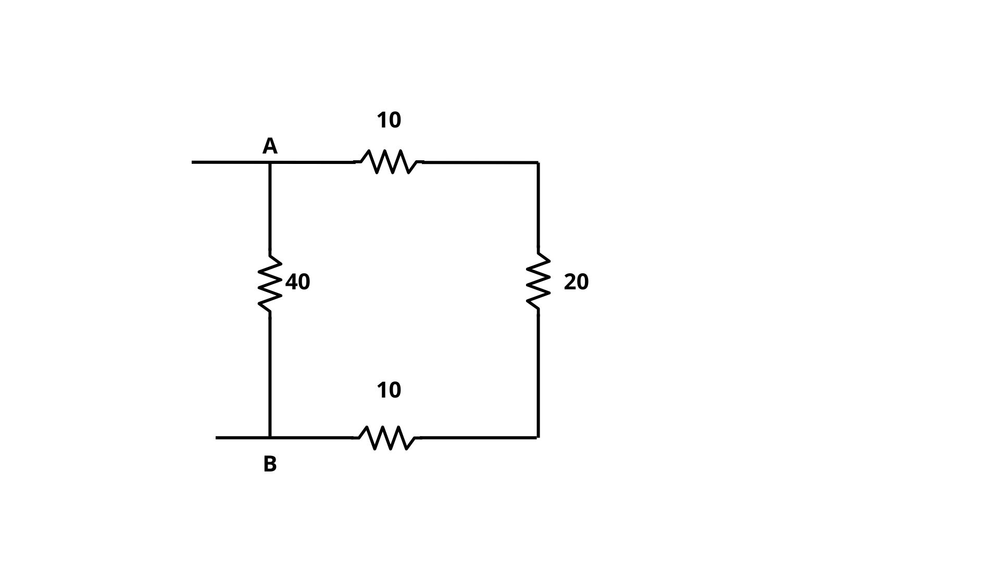
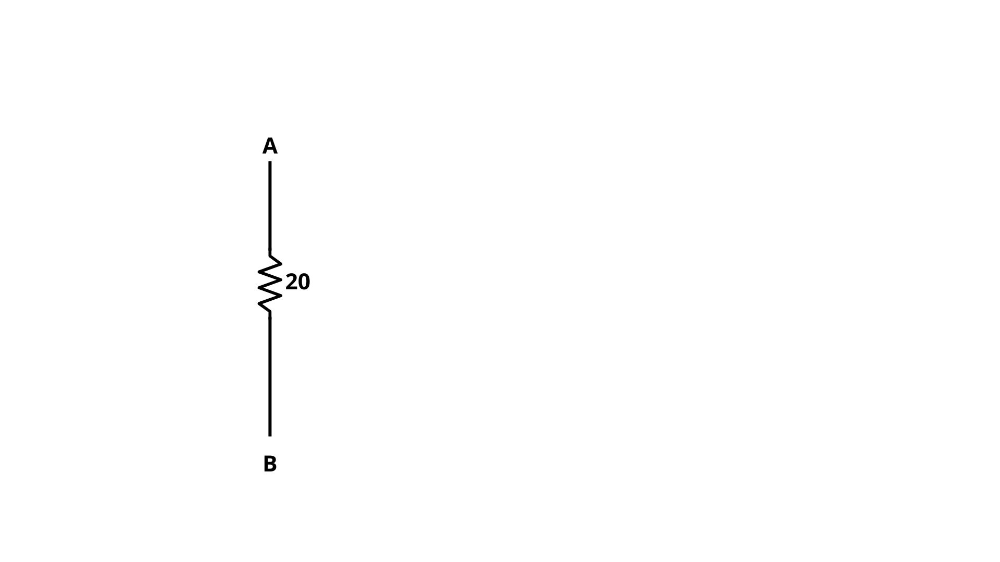

Resolva o seguinte exercício:
Para resolver, precisamos primeiro descobrimos a resistência equivalente da associação em série
10 + 20 + 10 = 40
O circuito ficará da seguinte maneira:
Resolvemos a associação em paralelo na ponta direita primeiro:
O circuito ficará da seguinte maneira:
Para descobrir a resistência equivalente da associação em série, precisamos somar as resistência:
10 + 20 + 10 = 40
O circuito ficará da seguinte maneira:
Para descobrir a resistência equivalente, precisamos fazer a divisão:
O circuito ficará da seguinte maneira:
